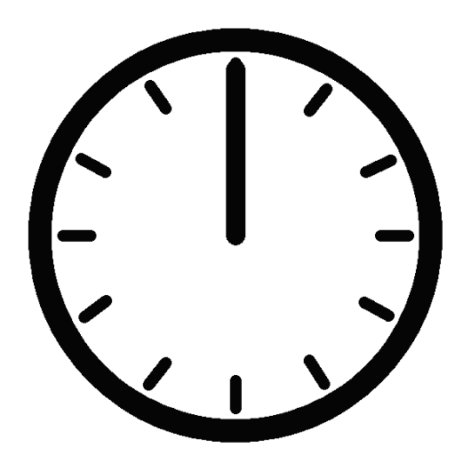

OBS Uptime
What does Uptime do?Displays how long the streamer has been streaming for.
How to Trigger uptime on chat?!time
*Requires OBS Websocket Plugin*

Displays how long the streamer has been streaming for.
How to Trigger uptime on chat?!time
*Requires OBS Websocket Plugin*